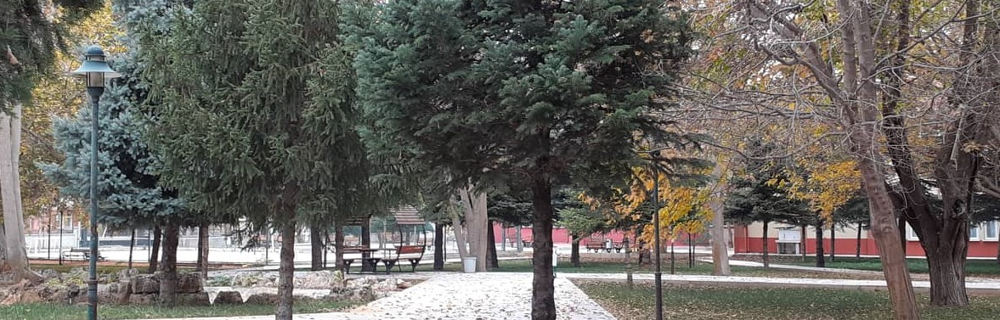

Genel Bilgiler

Dinar MYO, 1993-1994 Öğretim Yılında Halıcılık-Kilimcilik ve Turizm ve Otel İşletmeciliği Programlarıyla eğitime başladı. Bu programlara 1995–1996 Öğretim Yılında İşletme Yönetimi, 2001-2002 Öğretim Yılında Pazarlama Programı, 2003-2004 Öğretim Yılında Muhasebe ve Vergi Uygulamaları, 2008-2009 Öğretim Yılında Bilgisayar Programcılığı, 2009-2010 Öğretim Yılında Elektronik Teknolojisi, 2013-2014 Öğretim yılında Moda Tasarımı Programları eklenmiştir. Sivil Havacılık ve Kabin Hizmetleri Programına ise önümüzdeki sezon öğrenci alınacaktır.
Kampüs alanında bulunan 1.296 m2’ lik derslik binasına (A BLOK) 1997’ de taşınmıştır. Temeli 17 Haziran 2002 tarihinde atılan yeni binamız 2004-2005 Öğretim Yılında (B BLOK) hizmete açılmıştır. Meslek Yüksekokulumuzda ayrıca 3 Katlı İdari bina ve yeni yapılan Sosyal Tesis binası ile toplam dört adet binamız vardır. Meslek Yüksekokulumuzun 13.277 m2' lik kullanım alanının 4.675 m2’ lik alanı kapalı alandır. 8.602 m2 açık alanımız, 1 kütüphane, 500 m2' lik kantin, Kimya, Bilgisayar ve Elektronik Laboratuarı ile basketbol, voleybol ve tenis kortundan oluşan spor kompleksimiz yer almaktadır. Ayrıca otel uygulama odası, yiyecek ve içecek servis uygulama yeri, Konferans Salonu yer almaktadır.
|
|
© Balabanlar | 2019
Afyon Kocatepe Üniversitesi Dinar Meslek Yüksekokulu
|